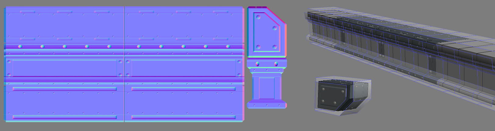

Normal Map Processing
Document Changelog: Created by Josh Marlow; maintained by Paul Oliver.
On Processing Normal Maps
The problem with processing is that there are a number of ways to do it. Knowing this, it is sometimes difficult to know which method will create the best result for the design you are working on. It's useful to get in the habit of experimenting and failing a few times so you understand the pros and cons of each method.
I've attempted below to define the most common methods and what sort of designs they work best with.
Chamfered Smoothing groups
Sometimes a single smoothing group is too loose and ranges too strongly from black to white. This is often the case with designs that are a combination of soft and hard designs. The majority of designs in games end up being like this so Chamfering is the most common method of processing.
Chamfering controls how much a smoothing group tightens along that edge. Often this is a straight forward enough workflow, match the forms as best you can while ensuring there's not too much dark to light in the smoothing group as they can indicate that it is not picking up on all the forms clearly.
- PROS - Rich normal maps, few no sharp edges in low-poly
- CONS - Vert count, lack of reusability
Single Smoothing group
Sometimes a single smoothing group is used simply for the whole mesh, generally this applies well to rock models as they are designed to be viewed from all angles. Rock models tend not to have variants created from them unless they have smaller outcropping or stalagmite type elements that are separate from the whole.
This makes them more suited to a single smoothing group because the normal map only has to function in one situation. Rock variety in-game, generally comes from the inventive ways in which each mesh is rotated, scaled and merged with the other rocks
So with designs such as this, having a surplus of extra left-to right and up to down normal map color is an advantage, it helps the rock normal map 'pop' more deeply from any angle
- PROS - Cheap and full of pop
- CONS - Not adaptable to other designs
Multiple Smoothing groups
A combination of different smoothing groups on one model is useful to increase the flatness of the normal map generated. It is most useful for mechanical designs such as iron girders where the edges of the design are hard rather than soft.
This method is most suited to modular designs because the flatter your normal map is, the more additional shapes it can support. If a mechanical design is unwrapped to flat strips then those 'trim' sections of the normal map can be unwrapped and applied to a variety of other forms. Many designs are only a combination of strips of varying detail so this can work quite well.
Thanks to its portability, this method is very useful for optimization cycles at the end of production where it becomes a necessity to strip textures out of a scene. If you have a normal map that is a series of metal strips, you can often support other custom designs almost exactly.
- PROS - Very clean and reusable normal maps
- CONS - Vert count
Processing Examples
As a test I took an iron girder mesh and processed it 3 different ways to demonstrate which was most useful to my purpose. There is no right way, its helpful to understand this as soon as we can.
Initially I tried using one smoothing group in the hopes of having a lot of pop in the normal map and to compensate for the fact that the design would be pretty flat and boring. I got the result you see below
Even on the normal map view only it was clear there were problems, you can see that the bolts on the side, in the middle are projected flat, but the bolts at the middle side are stretched toward the edge and can be seen at an angle. It's also clear that the normals are bending across the whole object so are not truly representative of the shape of the girder.
In-game you can see that the normals are too pillowed when seen from certain angles and when I tried to create a corner variant through the Symmetry modifier it created noticeable seams at the mirroring point that betrays how processed it and make it seam fake.
Next I tried using Multiple Smoothing Groups to control the process and make it cleaner.
This almost works but the side sections still bend vertically a little on the bolts and the bolts at the edges still stretch a bit horizontally next to the end cap which also has the skewed bolt problem. This method should actually work but its a weakness of 3DS Max's cage method, it handles breaks in smoothing groups or end caps to a rectangle shaped model poorly as the cage doesnt project flat, it bends slightly.
Ingame its clear that the end cap processed in correctly because of the Cage bending, it didn't project flat so it missed some of the information resulting in the bevels on the cap not meeting neatly with the bevels on the side. You can also see there are slight seams on some angles on the corner variant I made.
We are almost there though, it's just fine tuning thats required at this point and we can fix these last 2 issues with the Detached smoothing group trick.

So with using the Detached Smoothing group method, you can see how it allows the cage to interpret the smoothing groups correctly, the flat plane on the top projects straight up, the sides project straight outwards. I am also fixing the issues I was having with the bolts at the edges distorting by extending the lowpoly mesh past the ends of the hipoly design. This works because the smoothing groups are then relative to how they would be if I were tiling the design multiple times rather than relative to one section. We are tricking the cage into ignoring the ends of the smoothing group so it imitates how a tiling BSP texture works.
The areas of the low-poly I extend to the side have no hi-poly information to grab so I just move those UV's off to the side of the area that has information to process. This is a fiddly thing that doesn't make a lot of sense at first but what we are trying to do is process relative to how the object will be used in-game instead of processing relative simply to the UV's and one hi-poly configuration.
Often this is the key factor in choosing what method of processing to use, it's based more on how we know the asset will be used ingame. We are planning in this case on stacking a number of these girders side by side at the capped ends and merging them into longer versions that I processed.
We can see now that ingame this mesh looks perfect, all the bolts are projected flat, theres zero distortion and it support the corner variant without seams alo because the normals are so flat and relative to the smoothing groups.
This is what allows our texture to support multiple modular variants in-game, below you can see how many extra pieces I was able to make with these pieces, the girder was part of a railing set in the Bridge set in Gears3.
Due to the normal maps being so flat they were able to support other unplanned designs because they were easy to unwrap to more mechanical shapes.
Important!
You are viewing documentation for the Unreal Development Kit (UDK).
If you are looking for the Unreal Engine 4 documentation, please visit the Unreal Engine 4 Documentation site.